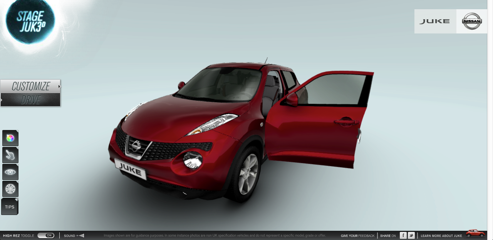
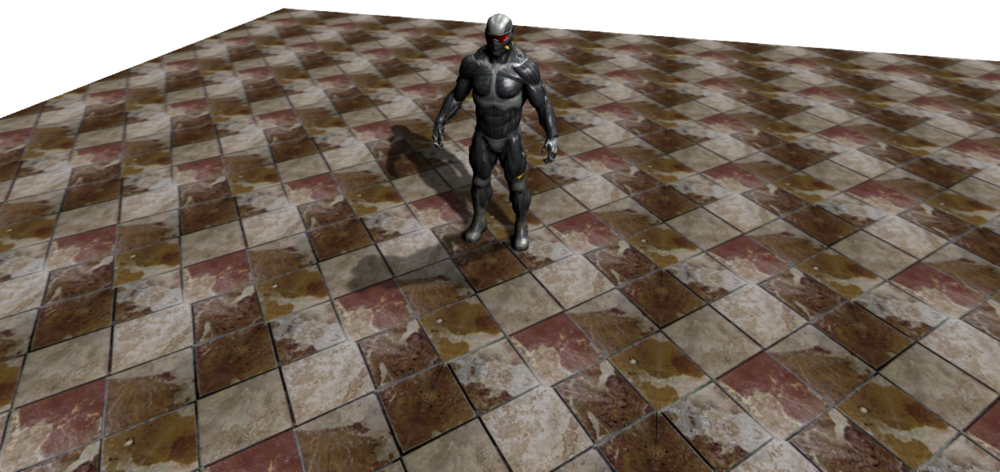
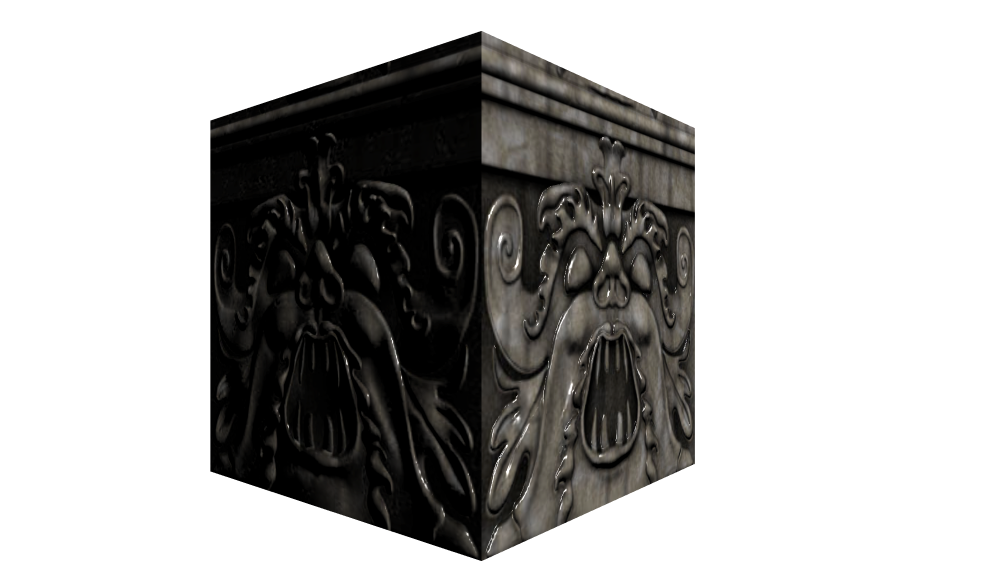
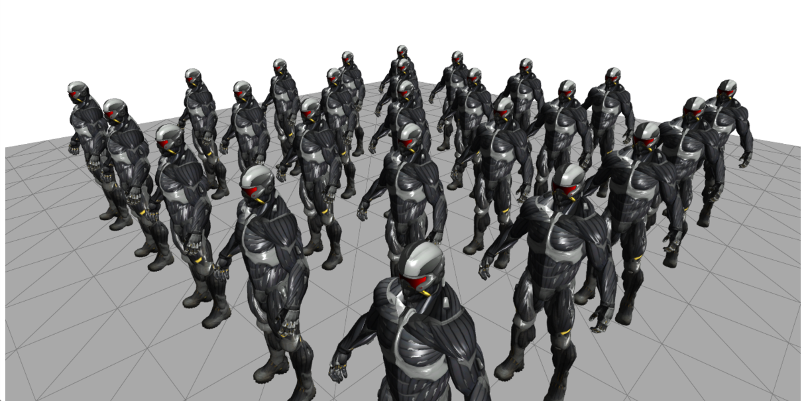
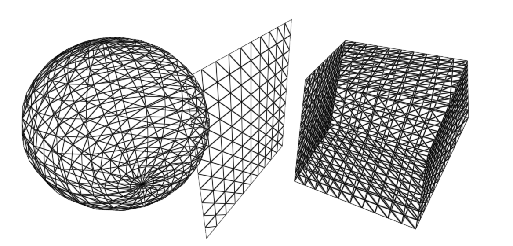
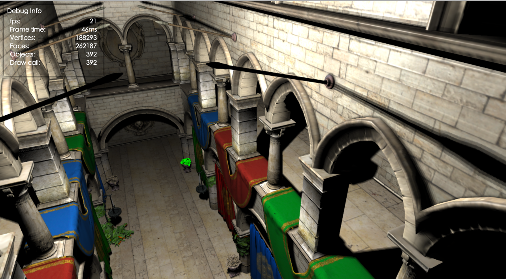
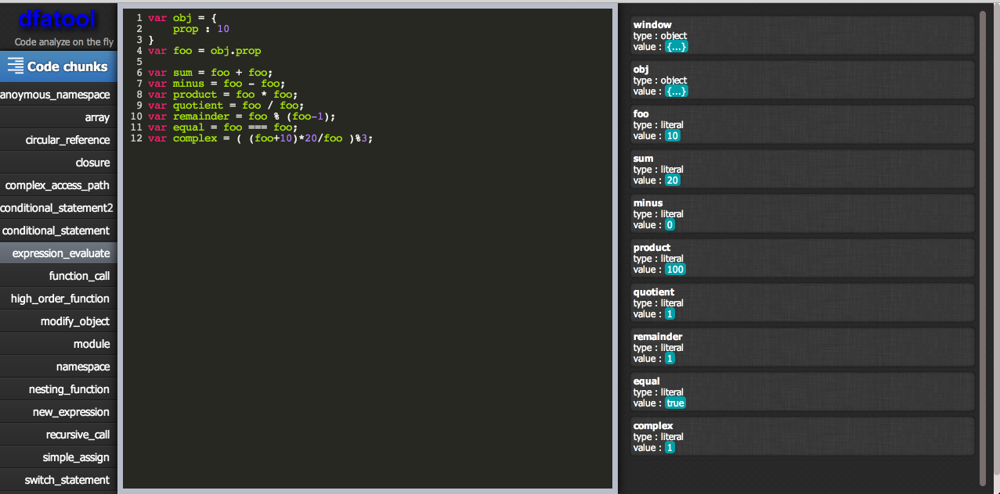
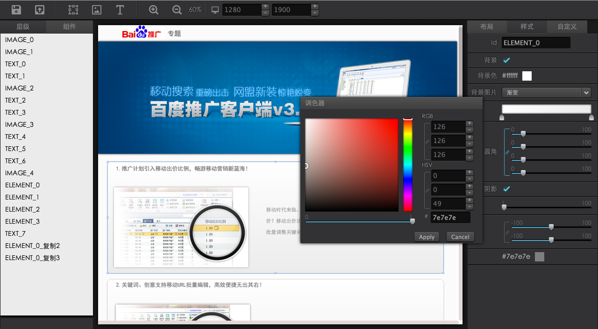

-
主修
- 前端图形(WebGL, canvas2d, svg)
- 前端动画
-
辅修
- js代码分析
- Web App
- UI
数据可视化
-
zrender
-
Animation
- 基于时间轴，关键帧关键帧插值
- 独立，高效，优雅
-
Transform
- 加了一个矩阵类和向量类
- 统一所有shape的位置，旋转，缩放变换为矩阵操作
-
-
echarts
-
力导向布局(Force Directed Layout)
- 展现复杂的网络图的聚类比较简单有效的方式
- 公式基于Graph Drawing by Force-directed Placement一文
- 粒子运动使用verlet积分
- 模拟退火加速布局稳定
-
前端图形引擎 - QTEK
- Canvas 2D, WebGL
- 接口偏底层，完备性
- 很多功能都是实验性，作为技术储备
- 
QTEK - Canvas 2D
- 场景树管理
- 分层绘制
-
常用图形
- 圆，矩形，直线
- 扇形，圆弧，圆角矩形
- 文字(支持自动换行和行高的TextBox),图片
- Path(Paper.js), Path(svg)
- html
- 所有图形的包围盒计算
- svg加载
svg
canvas
QTEK - WebGL
-
场景树
- 场景物体的位置旋转和缩放
-
灯光
- 点光源
- 平行光
- 聚光灯
-
内置材质库
- Lambert
- Phong
- Wireframe
- JSON格式的模型加载
-
顶点数据处理
- Mesh的分割和合并
- 法线，切线的动态计算
- 顶点分割
- 骨骼动画
- 阴影(PCF, VSM)
-
纹理
- 图片、视频、Canvas
- 法线贴图(Normal Map)，高光贴图(Specular Map)
- 渲染到纹理(RTT)
-
后期处理模块(Post Processing)
- Graph Based
- HDR, Tone Mapping
- 镜头特效(Depth of Field, Motion Blur, Lens Flare)
- 颜色调整(LUT)
-
摄像机控制
- 第一视角
- Orbit
示例
- 
-

- 
- 
-

- 
TECH DEMO
js数据流分析 dfatool
js程序中变量数据流的分析
- 使用esprima生成Parser API格式的AST
- 遍历AST得到所有作用域以及作用域里的变量
- 找出所有赋值表达式然后作推导(变量替换，函数值传递，属性查找）
- 得到变量类型和值的推测
Online Playground
UI框架 qpf
- 主要针对富客户端编辑器
- 基于MVVM的Knockout, 支持Data Binding
- 使用RequireJS进行模块化开发
- 样式不支持低版本IE
-
基础组件
- Button
- Slider
- Spinner
- Checkbox
- Combobox
- Label
- Textfield
-
容器
- Panel
- Window
- HBox
- VBox
- Tab
- List
-
Widget
- Color Picker
- Gradient
- Vector
- JavaScript
- PHP
- Ruby
- Python
var viewModel = {
language : ko.observable(1),
visible : ko.observable(true),
_enable : true,
toggle : function() {
this.text(viewModel._enable ? "Enable" : "Disable")
},
number : ko.observable(1)
}
示例 - EMAGE
在线图片处理

示例 - EPAGE
在线页面编辑
FELAB
Chrome Experiments
Node Based Compositor
图片，视频后期合成的简陋节点编辑器

- 第一次使用SeaJS作模块化加载
- 第一次使用Backbone作为MVC框架
Curve Editor
编辑复杂的缓动效果
粒子特效(Curl Noise)
- 粒子物理计算和渲染都放在GPU端(shader代码里)
- 粒子规模可以达到百万